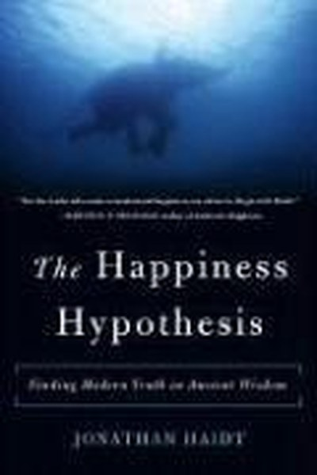

Library › Psychology & People
The Happiness Hypothesis — Summary & Key Lessons

Finding modern truth in ancient wisdom — the psychology of a good life.
📖 OPEN THE FULL INTERACTIVE BREAKDOWN →🌐 Read it in Hindi, Hinglish, Gujarati, Tamil & 22 more languages — free, with audio.
💡 The Big Idea
Ancient sages — Buddha, the Stoics, Jesus — intuited truths about happiness that modern science is only now confirming. Haidt's framework: the mind is an elephant (emotion) with a rider (reason); the rider thinks it's in charge but is really the elephant's servant. Happiness comes not from changing the world to fit your desires but from changing your relationship to it — through love, work, virtue and the right lens on life.
🧠 The 7 Key Lessons
Lesson 1: The Elephant and the Rider
The Divided Self
Haidt's central metaphor: the mind is an elephant (emotion, instinct, automatic processing) with a rider (conscious reasoning) perched on top. The rider thinks it's in charge but is mostly the elephant's spokesperson — explaining and justifying what the elephant already decided. The lesson: you can't reason your way out of emotional patterns; you have to train the elephant. Change habits, environments and emotions first; the narrative follows.
📖 Example: People who 'know' they should exercise but don't aren't suffering a reasoning failure — the elephant doesn't feel like it. The fix is making exercise a habit the elephant enjoys. Read the full example →
⚡ Do this: Pick one goal you've failed at through willpower. Redesign it for the elephant: make it easy, fun and tied to an existing habit.
Lesson 2: The Happiness Set-Point — And How to Move It
The Happiness Formula
Research shows genetics set a baseline happiness level, and big life events — lottery wins, accidents — move it only temporarily. But Haidt adds nuance: the set-point can be shifted by persistent effort — gratitude practice, therapy, meditation and meaningful work genuinely raise the floor. The lesson: don't chase the next milestone expecting permanent joy; invest in the practices that move your baseline.
📖 Example: Lottery winners return to baseline within a year; but people who practice gratitude and strong relationships consistently report higher happiness years later. Read the full example →
⚡ Do this: Start one baseline-raising practice this week: a daily gratitude note, therapy, meditation, or 30 minutes of absorbed work.
Lesson 3: Love Is the Foundation — We Are Wired to Connect
Love and Attachment
Haidt reviews Harlow's monkey experiments and attachment research to show: the need for connection is as fundamental as food. Isolation damages us biologically; love heals. The lesson: relationships are not a luxury on top of a successful life — they ARE the successful life. People who prioritize love, friendship and belonging outlive and out-happy those who prioritize achievement alone.
📖 Example: Harlow's monkeys chose a soft cloth 'mother' over a wire one with food — comfort and connection mattered more than calories. Read the full example →
⚡ Do this: Invest one hour this week in a relationship you've neglected — a call, a visit, a real conversation. No agenda.
Lesson 4: Adversity Is the Soil of Growth
Adversity and Growth
Post-traumatic growth research shows many people emerge from hardship with greater strength, deeper relationships and clearer purpose. Haidt's framework: challenge is necessary for development — like the body, the mind grows through stress, recovery and reflection. The lesson: don't just survive difficulties; process them deliberately. The people who grow from adversity are those who reflect, connect and find meaning — not those who numb it.
📖 Example: People who faced serious illness or loss often report that life became more precious and priorities clearer — the growth is real, not just consolation. Read the full example →
⚡ Do this: Take one past hardship and write three sentences: what did it teach, what did it strengthen, who did it connect me to?
Lesson 5: The Reciprocity Instinct — Give First, Win Later
The Psychology of Reciprocity
Human beings have a powerful, innate tendency to return favours — and to punish those who defect. Haidt shows this instinct is the foundation of cooperation and society. The lesson: generosity is not altruistic naivety; it's a strategy that the human machine rewards. People who give first — help, trust, value — accumulate a bank of goodwill that pays back unpredictably and handsomely.
📖 Example: Studies show that helping colleagues, even without expectation, reliably returns in the form of reciprocity — the giver ends up ahead. Read the full example →
⚡ Do this: Do one unrequested act of generosity this week — help, recommend, introduce. Track what comes back to you in the following month.
Lesson 6: Work Is Love Made Visible
The Pursuit of Mastery
Haidt examines flow — the state of total absorption in challenging work — and finds it is one of the deepest sources of happiness. The lesson: the quality of your work life determines the quality of your life, and the key variable is not pay but engagement — the fit between skill and challenge. People who find or create flow in their work report far higher life satisfaction than those who merely optimize salary.
📖 Example: Mihaly Csikszentmihalyi's research found people in flow — surgeons, climbers, chess players — report their happiest moments during demanding work. Read the full example →
⚡ Do this: Identify one task that gives you flow. Increase its share in your week by 20% and decrease one draining task by 20%.
Lesson 7: Virtue Is a Set of Skills — Practice It
Virtue and Character
Haidt resurrects the ancient idea that character can be trained: virtues are skills strengthened by practice, not innate gifts. Ancient cultures knew this — modern psychology confirms it through habit research. The lesson: you are not stuck with your character; you are practicing it daily, whether you intend to or not. Choose the virtues you want to become skilled at, and build deliberate practice around them.
📖 Example: Just as a musician practices scales, the ancients practiced virtues — honesty, courage, temperance — until they became automatic. Read the full example →
⚡ Do this: Pick one virtue you admire (patience, honesty, courage). Create one daily practice that exercises it for 30 days.
✅ 5-Step Action Plan
- Redesign one willpower goal for the elephant — easy, fun, habitual.
- Start one baseline-raising practice: gratitude, meditation or therapy.
- Invest one real hour in a neglected relationship this week.
- Process one past hardship for its three growth lessons.
- Do one unrequested act of generosity and track the return.
⚠️ When This Doesn't Work
Haidt's 'happiness comes from between, not within — love and connection are the foundation' is the most evidence-backed happiness book ever — and Orkut is its bittersweet proof: for millions of Brazilians, Orkut was literally the source of connection and joy — friendships, romances, communities — and then the platform was shut down, and the connections that lived only inside it died with it. Haidt's lesson is right — and the caveat is that connection built on rented land is fragile. The happiness that lives in other people's platforms can be deleted by them. Build your tribe in places you control: the real-life adda, the family table, the phone number — not just the feed.
💀 The Graveyard Proves It
🌍 Orkut — Google's Social Network That Won Two Countries and Lost Earth. Burn: First-mover advantage worldwide. Read the full case study →
💬 Best Quotes from The Happiness Hypothesis
- “The rider is an advisor to the king, not the king himself.”
- “Happiness comes from between, not from within — it grows from relationships and work.”
- “You cannot change the world, but you can change your mind.”
Interactive version: mark lessons as read, listen in your language, share quote cards.